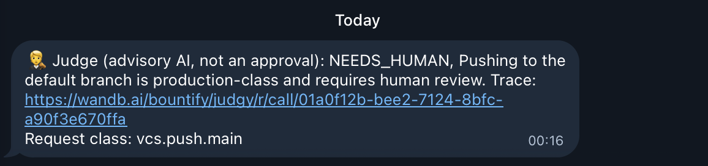
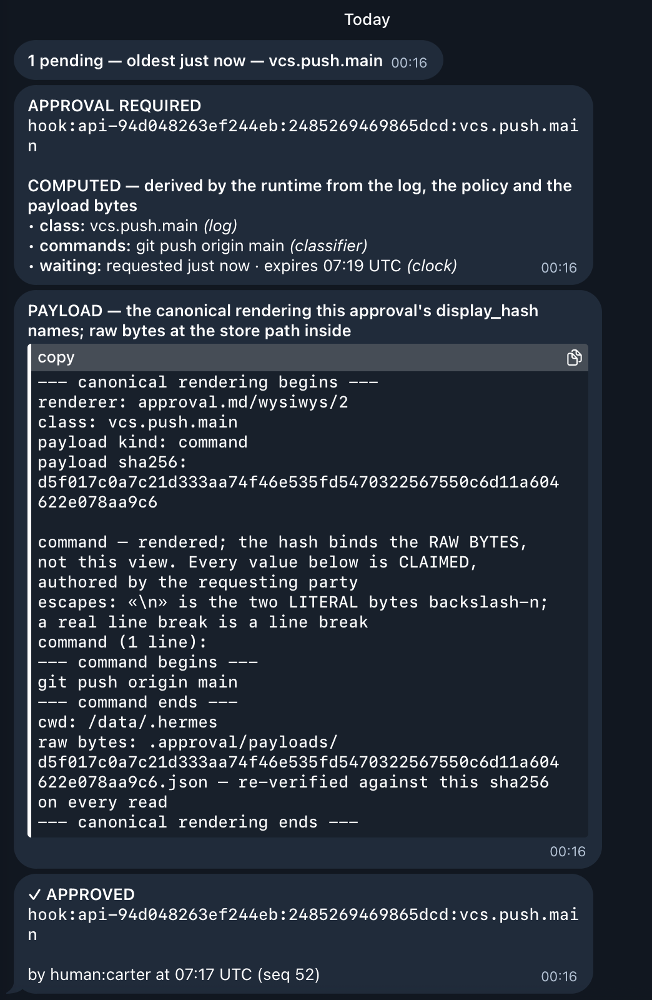
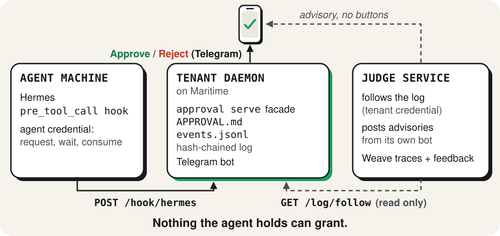

The agent asks.
A human approves.
A judge advises.
Approved puts a real approval.md gate between an agent and a risky action. A person decides; an AI judge advises. Every decision is recorded and measured.
Preview only — nothing here creates an account, provisions a server, connects Telegram, or charges you.
Shape your approval setup.
Pick an agent, set the rules it would follow, review a proposed plan, and see who would receive each request. Your draft stays in this browser until you download it.
Step 1 of 4
Choose an agent
Hermes is the preview path. Other agent integrations are planned; selecting one here would imply setup that does not exist yet.
Decide what needs you
Unknown actions default to manual review. These choices produce a real, parseable APPROVAL.md draft; they do not activate a gate.
Read actions are allowed in this draft. Workspace writes and every unnamed class still ask first. “Only I may do it” means no agent request or execution for that class.
Review a proposed plan
These are illustrative monthly plans for a future hosted product. Choosing one here does not start checkout, accept terms, reserve capacity, or use paid inference.
Proposed merchant: Bountify Inc. Approved would use its own Stripe account under the Bountify organization, separate from the Jobmaxxing product catalog. No payment is collected in this preview.
Preview the Telegram handoff
In a provisioned setup, these three roles would exchange a request and a decision. None is connected for your preview.
- Hermes agentProposes an action under your draft policyNot connected
- Approval botWould deliver the held request to a human on TelegramNot connected
- Advisory judgeWould add advice; it cannot approve for youNot connected
The preview ends here. To see a real gate, judge, and human decision, use the separate live demo below. Its browser chat emulates Telegram transport.
Go to the live demo belowTry the full approval loop
Run a scripted agent through the real approval.md gate. A live AI judge gives advice; you decide each held action here and see what the gate actually did. The chat in this demo emulates Telegram transport, so there is no account or bot setup.
A private browser session starts when you open it. Prompts may take up to 30 seconds to arrive.
See it
The demo deck
The pitch, the architecture and the gate, judge and human thread, in the browser.
Open the deck → Try itPolicy builder
Pick what your agent may do alone and what waits for you. It writes the
APPROVAL.md the gate enforces. Runs in your browser.
Judge traces and evaluation
Every verdict is a Weave trace. Human decisions are feedback on it. The evaluation scores agreement.
wandb.ai/bountify/judgy → Researchjudgy
The reviewer behind the judge: how it is prompted, measured and promoted, and what it gets wrong.
approval.md/judgy/research → Live on MaritimeThe judge, deployed
One microVM following a real tenant's log with a read-only credential. Its health endpoint reports the worker and whether the hash chain verified.
GET /health → Local, offlineRun the whole flow
make demo brings up the daemon, a fake Telegram, the judge and a scripted agent. No secrets.
It ran live
30 September 2026, 07:16 UTC. A Hermes agent on one Maritime machine tried
git push origin main. The gate on a second machine held it and asked the approver on
Telegram. The judge on a third machine read the request, answered in four seconds and posted its
advisory from its own bot. The human approved, and that decision went to Weave as feedback on the
judge's trace:
call 01a0f12b.


human:carter, seq 52 in the hash-chained log.Measured
Evaluation run: Weave call 01a0ec75. The scenario set is synthetic and small; the numbers say the loop works, not that the judge is proven.
How it works

- The agent's tool call hits a fail-closed hook. The gate classifies it against the tenant's
APPROVAL.md. - A manual class opens a request in the append-only, hash-chained log. The approver gets a Telegram prompt.
- The judge reads the request with a read-only credential and posts a labelled advisory from a separate bot. It cannot grant.
- The human taps. The gate records the decision and the agent's retry adopts it.
- The decision is attached to the judge's Weave call as feedback, and the evaluation scores agreement.
Production readiness
Resilience
The judge fails toward absence: no verdict is ever a grant. A chain break stops it. Follow errors back off and retry.
RESILIENCE.md →Security
Separate bot, read-only credential, no agent credential on the judge, redaction toward W&B. Known gaps are written down.
SECURITY.md →Reviewed adversarially
An independent reviewer was given only the repo and its contracts and told to break it. Every finding was fixed with a test.
ARCHITECTURE.md →Run it
git clone https://github.com/bountify-ai/approved && cd approved make setup # uv sync make test # run the automated tests with sockets disabled make demo # the whole flow in Docker, offline; tap Approve or Reject at http://127.0.0.1:8090/